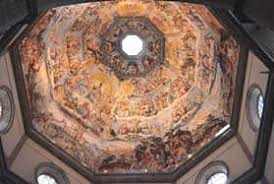
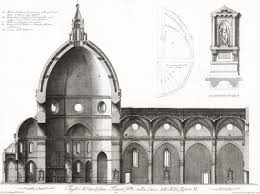
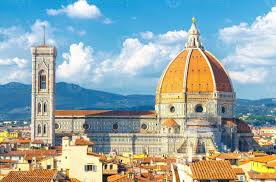
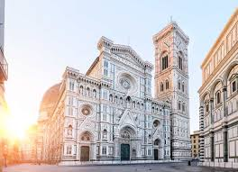
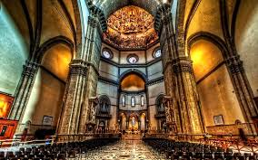
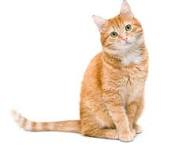
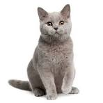

Santa Maria del Fiore is one of the largest churches in the world: its layout consists of a basilica with three naves, grafted onto a presbytery dominated by the great octagon of the immense dome, which opens into three apses, each composed of five radial chapels. The Cathedral is 153 meters long, 90 meters wide at the crossing, and 92 meters high from the floor to the dome's lantern. The dedication to Santa Maria del Fiore is a clear allusion to the name of the city, "Florentia," and its emblem, the "lily." The cornerstone of the new cathedral was laid on September 8, 1296, and its construction was entrusted to Arnolfo di Cambio. Arnolfo's design was similar in form but smaller than the current building, which instead corresponds to the expansion developed by Francesco Talenti starting in the mid-14th century. The church was consecrated by Pope Eugene IV on March 25, 1436, when the dome was completed. The exterior walls are clad in white, red, and green marble with geometric figures and stylized flowers. The sides are adorned with four elegant mullioned windows, eight circular windows, and four monumental portals richly decorated with sculptures. The façade is a 19th-century neo-Gothic masterpiece, designed by Emilio De Fabris and decorated by the finest Tuscan artists of the time; it replaced a previous mural decoration from the late 17th century, after the front was left uncovered by the demolition of the ancient, unfinished medieval façade begun by Arnolfo.

